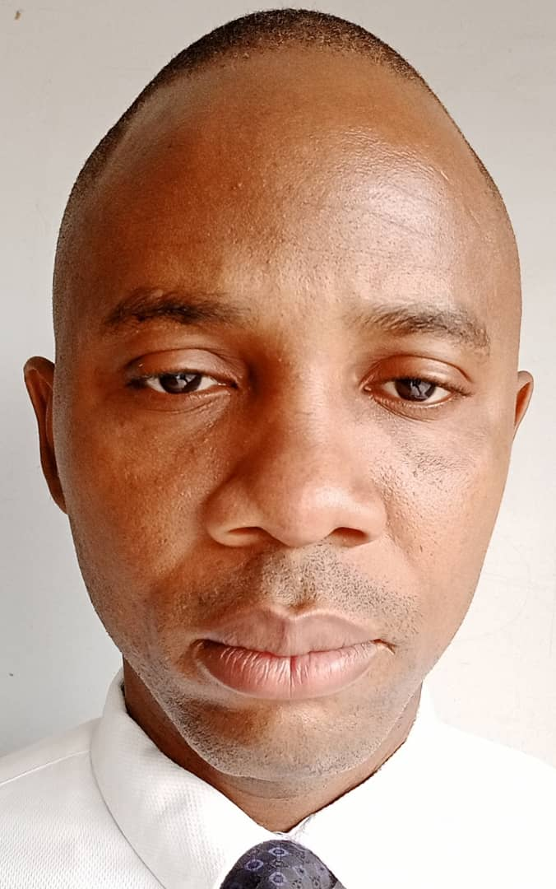

Michael Osaregbemah Uwaya | WDD 130
Hi! My Name is Michael Osaregbemah Uwaya from Nigeria. I am studying Web development with BYU-Idaho. This is my first Website. I love watching movie, surfing the web and love talking about food.
I am one and first out of 8 children. We just lost and buried our Dad in this hometown. I love been on the net, as a result, I will enjoy my process to becoming a Web Developer.
I will start with developing an official website for myself, the design a web page for the family Nursery and Primary School. I love a situation where 95% of the school academics and administration will be moved online. Teachers and parents would have to interect on the school website.
Teachers will upload all their course materials, result or daily pupils' class participation online. All payments and receipts will also be done with ease on the web. Parents can print their children certificate, payment receipts and help their children follow up with class tasks. It will be an all-in-one process enjoyed by the school community.